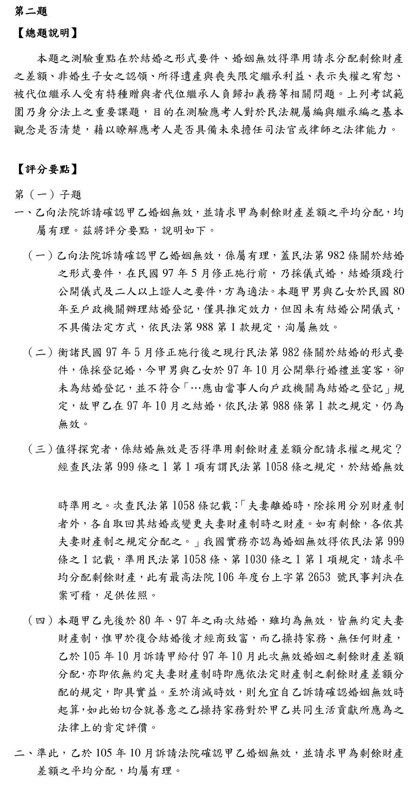
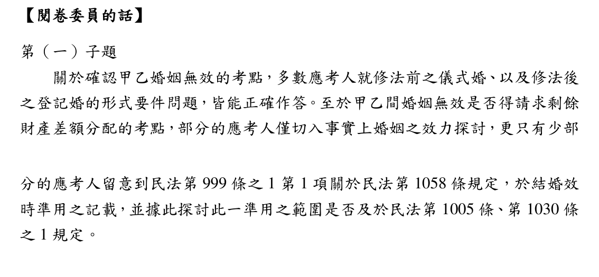

結婚兩次都無效，還能分財產嗎？
111年律師第二試｜民法與民事訴訟法（一）｜第二題第（一）小題（20分）
題目
這一題有三個小題。本頁只做第（一）小題，用得到的事實畫黃色底線。
- （一）假設乙曾於105年10月向法院訴請確認甲乙婚姻無效，並請求甲為夫妻剩餘財產差額之平均分配。乙之訴，是否有理？（20分）本頁只做這一題
- （二）甲死亡後，若經協調分配乙剩餘財產之差額後，甲遺有現金200萬元，惟甲尚欠債權人庚1100萬元未還。庚訴請戊清償上開1100萬元之債務，是否有理？（10分）
- （三）甲死亡後，若經協調分配乙剩餘財產之差額後，甲遺有現金700萬元，且無任何債務。甲之遺產應如何分配？（20分）
影片說明
影片依序示範：主播介紹、整題讀一遍並框出第（一）小題、甲乙的時間軸、學弟學姊帶出兩個問題、80年的儀式婚、97年10月的登記婚、準用鏈一步一步接、106年度台上字第2653號判決與剩餘財產帳本、消滅時效、三個易錯點，最後把擬答從頭看一遍。
人物與時間線
| 人 | 身分 | 本小題的角色 |
|---|---|---|
| 甲 | 男方，復合後經商致富 | 被告：被請求確認婚姻無效、分配剩餘財產 |
| 乙 | 女方，操持家務，沒有任何財產 | 原告：請求確認婚姻無效，並請求平均分配剩餘財產差額 |
| 丙、丁、戊、己等人 | 第（二）（三）小題才用到，本小題可以先不管 | |
第982條修正施行
灰色是舊法的儀式婚，藍色是新法的登記婚；時間軸只表示先後，未依比例。
答題順序：兩個問題
第①問要看結婚當時的法律：97年5月23日以前是儀式婚，以後是登記婚。第②問要把準用規定一步一步接起來，最後再處理消滅時效。
本題用到的條文與判決
先看要件，再套本案事實。原文中畫底線的部分，就是本題用到的那一句。
修正前民法第982條（74年6月3日至97年5月22日適用）：儀式婚（第①問）
結婚，應有公開儀式及二人以上之證人。
經依戶籍法為結婚之登記者，推定其已結婚。
白話當時結婚要辦公開儀式，並有兩個以上證人在場。去戶政機關登記，只是讓人先推定已經結婚；如果證明其實沒有儀式，推定就被推翻。
例子兩人只到戶政事務所登記、從沒辦任何公開儀式，在舊法下欠缺結婚的方式，婚姻無效。本頁舉例
| 要件 | 本案事實（80年） | 結果 |
|---|---|---|
| 公開儀式 | 未舉辦結婚儀式及宴客 | ✕ |
| 結婚登記 | 有，但只有推定效力 | 推定被推翻 |
| 結論 | 不具備修正前第982條第1項之方式，依修正前第988條第1款 | ✕ 無效 |
民法第982條（現行，97年5月23日施行）：登記婚（第①問）
結婚應以書面為之，有二人以上證人之簽名，並應由雙方當事人向戶政機關為結婚之登記。
白話現在結婚要有書面、兩個以上證人簽名，而且要去戶政機關登記。婚禮辦得再盛大，沒有登記就不算。
施行日96年5月23日修正公布，依民法親屬編施行法第4條之1第1項「自公布後一年施行」，即97年5月23日。
| 要件 | 本案事實（97年10月） | 結果 |
|---|---|---|
| 向戶政機關為結婚登記 | 公開舉行婚禮並宴客，惟未辦理結婚登記 | ✕ |
| 結論 | 不具備第982條之方式，依第988條第1款 | ✕ 無效 |
民法第999條之1第1項、第1058條：婚姻無效也能比照離婚分財產（第②問）
第一千零五十七條及第一千零五十八條之規定，於結婚無效時準用之。（第999條之1第1項）
夫妻離婚時，除採用分別財產制者外，各自取回其結婚或變更夫妻財產制時之財產。如有剩餘，各依其夫妻財產制之規定分配之。（第1058條）
白話婚姻無效時，財產怎麼處理，比照離婚：各自拿回自己的，剩下的依兩人的夫妻財產制分配。
民法第1005條、第1030條之1第1項：法定財產制的剩餘財產分配（第②問）
夫妻未以契約訂立夫妻財產制者，除本法另有規定外，以法定財產制，為其夫妻財產制。（第1005條）
法定財產制關係消滅時，夫或妻現存之婚後財產，扣除婚姻關係存續所負債務後，如有剩餘，其雙方剩餘財產之差額，應平均分配。但下列財產不在此限：一、因繼承或其他無償取得之財產。二、慰撫金。（第1030條之1第1項）
白話沒有約定財產制，就是法定財產制。結束時，把雙方婚後財產扣掉債務，比較誰剩得多，多的那一方要把差額的一半分給另一方。
本題甲在97年10月復合後經商致富，乙操持家務、沒有財產，乙請求分配有實益。題目沒有給金額，不能算出數額。
民法第1030條之1第5項（現行；105年起訴時為第4項）：消滅時效（第②問）
第一項剩餘財產差額之分配請求權，自請求權人知有剩餘財產之差額時起，二年間不行使而消滅。自法定財產制關係消滅時起，逾五年者，亦同。
問題婚姻自始無效，什麼時候算「法定財產制關係消滅」並不明確。
評分要點宜自乙訴請確認婚姻無效時起算，才能肯定乙操持家務的貢獻。乙兩個請求同時起訴，未罹於時效。
最高法院106年度台上字第2653號民事判決（106.11.16）（第②問）
按結婚應有公開儀式及二人以上之證人，不具備上開方式者，結婚無效。又第1057條及第1058條之規定，於結婚無效時準用之，96年5月23日修正前民法第982條第1項、第988條第1款、第999條之1第1項分別定有明文。查系爭婚姻欠缺修正前民法第982條第1項規定之公開儀式要件，為原審所認定，依前揭民法規定，兩造系爭婚姻應為無效，被上訴人雖於前案請求確認該婚姻關係不成立，仍不影響系爭婚姻無效之本質，其自得準用民法第1058條規定，請求分配剩餘財產。
白話那個案子也是只登記、沒有儀式，最高法院認為婚姻無效，仍可準用第1058條請求分配剩餘財產。
注意這段是最高法院自己的論述。判決中「以確認婚姻無效訴訟起訴時為剩餘財產計算時點」那段，是最高法院轉述二審的理由；本題的「消滅時效從起訴時起算」則是評分要點的見解，兩者不要混在一起。
現行條文依全國法規資料庫核對；修正前第982條、第988條依全國法規資料庫歷史法規（96年3月28日版，與74年6月3日版文字相同）核對（2026-11-23）。106台上2653已打開全文並查看歷審。
答題地圖
考選部評分要點與閱卷委員的話

閱卷委員的話：
- 多數考生就修法前的儀式婚、修法後的登記婚，都能正確作答。
- 婚姻無效能否請求剩餘財產分配，部分考生只談事實上婚姻的效力。
- 只有少數考生注意到第999條之1第1項準用第1058條，並討論準用範圍是否及於第1005條、第1030條之1。

來源：考選部〈111年司法官、律師考試第二試法律專業科目評分要點與閱卷委員的話〉民法與民事訴訟法（一）第5、6、9、10頁，已用PyMuPDF轉成圖片逐頁核對。閱卷委員的話原文「於結婚效時準用」漏一個「無」字，照原文呈現。
擬答
乙請求確認婚姻無效及分配剩餘財產差額，均有理由。
一、甲、乙兩次結婚均無效
（一）80年結婚
民法第982條於97年5月23日修正施行前採儀式婚，第1項規定須有公開儀式及二人以上證人；為結婚登記者，僅推定已結婚。甲、乙未舉行公開儀式，依修正前第988條第1款無效。
（二）97年10月結婚
現行第982條採登記婚，須有書面、二人以上證人簽名，並向戶政機關為結婚登記。甲、乙雖公開舉行婚禮，但未登記，依第988條第1款仍屬無效。
二、乙得請求平均分配剩餘財產差額
（一）依第999條之1第1項，第1058條於結婚無效時準用之；實務亦認得依第1030條之1第1項請求平均分配（最高法院106年度台上字第2653號判決）。
（二）甲、乙未約定財產制，依第1005條為法定財產制。甲於97年10月復合後經商致富，乙操持家務而無財產，乙就此請求平均分配差額，有實益。
（三）婚姻自始無效，無明確之財產制消滅時點，第1030條之1之時效，宜自乙訴請確認婚姻無效時起算，以肯定乙操持家務之貢獻。乙同時起訴，未罹於時效。
擬答443字（含標題、標點與數字，不含空白，以程式計算）。20分題目參考上限429字（120分鐘×20/150＝16分鐘，扣讀題3分鐘，13分鐘×每分鐘約33字）；略超14字。
互動：換一個結婚方式，結論會怎樣？
關鍵是「結婚當時的法律」和「實際做了什麼」對不對得上。先自己想想，再點。
第三個分頁是本頁為了比較所做的假設，只看結婚方式，假設其他要件都具備。本頁推論
學說補充
婚姻無效準用剩餘財產分配的範圍、消滅時效起算點的學說討論，本頁尚未加入可核對的學說文獻。
預想易錯點
①②依評分要點整理，③依閱卷委員的話整理。
| 可能的錯誤 | 應該怎麼寫 |
|---|---|
| ① 以為80年有登記就有效 | 當時是儀式婚，登記只有推定效力；沒有公開儀式，依修正前第988條第1款無效。 |
| ② 以為97年有辦婚禮就有效 | 97年5月23日起改採登記婚，沒有登記，依第988條第1款仍屬無效。 |
| ③ 以為婚姻無效就不能分財產，或只談事實上婚姻 | 寫出第999條之1第1項準用第1058條，再接第1005條、第1030條之1第1項。 |
延伸思考
參考資料
歡迎指正
相關連結
民法講義總覽 下一題：111年第二題（二）甲欠1100萬，只留200萬，戊要全還嗎？ 上一題：111年第一題（四）房子被拍賣了，丙、丁各能要多少？ 相關：112年第二題（一）唯一有責配偶請求離婚 GitHub 原始檔